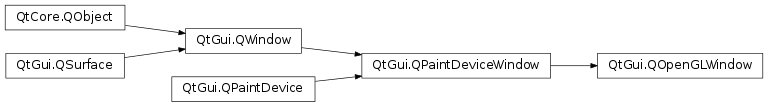

QOpenGLWindow¶
Note
This class was introduced in Qt 5.4.
Synopsis¶
Functions¶
- def
context() - def
defaultFramebufferObject() - def
doneCurrent() - def
grabFramebuffer() - def
isValid() - def
makeCurrent() - def
shareContext() - def
updateBehavior()
Virtual functions¶
- def
initializeGL() - def
paintGL() - def
paintOverGL() - def
paintUnderGL() - def
resizeGL(w, h)
Signals¶
- def
frameSwapped()
Detailed Description¶
The
PySide2.QtGui.QOpenGLWindowclass is a convenience subclass ofPySide2.QtGui.QWindowto perform OpenGL painting.
PySide2.QtGui.QOpenGLWindowis an enhancedPySide2.QtGui.QWindowthat allows easily creating windows that perform OpenGL rendering using an API that is compatible withPySide2.QtWidgets.QOpenGLWidgetand is similar to the legacyPySide2.QtOpenGL.QGLWidget. UnlikePySide2.QtWidgets.QOpenGLWidget,PySide2.QtGui.QOpenGLWindowhas no dependency on the widgets module and offers better performance.A typical application will subclass
PySide2.QtGui.QOpenGLWindowand reimplement the following virtual functions:
PySide2.QtGui.QOpenGLWindow.initializeGL()to perform OpenGL resource initializationPySide2.QtGui.QOpenGLWindow.resizeGL()to set up the transformation matrices and other window size dependent resourcesPySide2.QtGui.QOpenGLWindow.paintGL()to issue OpenGL commands or draw usingPySide2.QtGui.QPainterTo schedule a repaint, call the
PySide2.QtGui.QPaintDeviceWindow.update()function. Note that this will not immediately result in a call toPySide2.QtGui.QOpenGLWindow.paintGL(). CallingPySide2.QtGui.QPaintDeviceWindow.update()multiple times in a row will not change the behavior in any way.This is a slot so it can be connected to a
QTimer.timeout()signal to perform animation. Note however that in the modern OpenGL world it is a much better choice to rely on synchronization to the vertical refresh rate of the display. SeePySide2.QtGui.QSurfaceFormat.setSwapInterval()on a description of the swap interval. With a swap interval of1, which is the case on most systems by default, thePySide2.QtGui.QOpenGLContext.swapBuffers()call, that is executed internally byPySide2.QtGui.QOpenGLWindowafter each repaint, will block and wait for vsync. This means that whenever the swap is done, an update can be scheduled again by callingPySide2.QtGui.QPaintDeviceWindow.update(), without relying on timers.To request a specific configuration for the context, use
setFormat()like for any otherPySide2.QtGui.QWindow. This allows, among others, requesting a given OpenGL version and profile, or enabling depth and stencil buffers.Unlike
PySide2.QtGui.QWindow,PySide2.QtGui.QOpenGLWindowallows opening a painter on itself and performPySide2.QtGui.QPainter-based drawing.
PySide2.QtGui.QOpenGLWindowsupports multiple update behaviors. The default,NoPartialUpdateis equivalent to a regular, OpenGL-basedPySide2.QtGui.QWindowor the legacyPySide2.QtOpenGL.QGLWidget. In contrast,PartialUpdateBlitandPartialUpdateBlendare more in line withPySide2.QtWidgets.QOpenGLWidget‘s way of working, where there is always an extra, dedicated framebuffer object present. These modes allow, by sacrificing some performance, redrawing only a smaller area on each paint and having the rest of the content preserved from of the previous frame. This is useful for applications than render incrementally usingPySide2.QtGui.QPainter, because this way they do not have to redraw the entire window content on eachPySide2.QtGui.QOpenGLWindow.paintGL()call.Similarly to
PySide2.QtWidgets.QOpenGLWidget,PySide2.QtGui.QOpenGLWindowsupports theQt.AA_ShareOpenGLContextsattribute. When enabled, the OpenGL contexts of allPySide2.QtGui.QOpenGLWindowinstances will share with each other. This allows accessing each other’s shareable OpenGL resources.For more information on graphics in Qt, see Graphics .
-
class
PySide2.QtGui.QOpenGLWindow(shareContext[, updateBehavior=NoPartialUpdate[, parent=nullptr]])¶ -
class
PySide2.QtGui.QOpenGLWindow([updateBehavior=NoPartialUpdate[, parent=nullptr]]) Parameters: - shareContext –
PySide2.QtGui.QOpenGLContext - updateBehavior –
PySide2.QtGui.QOpenGLWindow.UpdateBehavior - parent –
PySide2.QtGui.QWindow
Constructs a new
PySide2.QtGui.QOpenGLWindowwith the givenparentandupdateBehavior. ThePySide2.QtGui.QOpenGLWindow‘s context will share withshareContext.See also
QOpenGLWindow.UpdateBehaviorPySide2.QtGui.QOpenGLWindow.shareContext()Constructs a new
PySide2.QtGui.QOpenGLWindowwith the givenparentandupdateBehavior.See also
QOpenGLWindow.UpdateBehavior- shareContext –
-
PySide2.QtGui.QOpenGLWindow.UpdateBehavior¶ This enum describes the update strategy of the
PySide2.QtGui.QOpenGLWindow.Constant Description QOpenGLWindow.NoPartialUpdate Indicates that the entire window surface will redrawn on each update and so no additional framebuffers are needed. This is the setting used in most cases and is equivalent to how drawing directly via PySide2.QtGui.QWindowwould function.QOpenGLWindow.PartialUpdateBlit Indicates that the drawing performed in PySide2.QtGui.QOpenGLWindow.paintGL()does not cover the entire window. In this case an extra framebuffer object is created under the hood, and rendering performed inPySide2.QtGui.QOpenGLWindow.paintGL()will target this framebuffer. This framebuffer is then blitted onto the window surface’s default framebuffer after each paint. This allows havingPySide2.QtGui.QPainter-based drawing code inPySide2.QtGui.QOpenGLWindow.paintGL()which only repaints a smaller area at a time, because, unlike , the previous content is preserved.QOpenGLWindow.PartialUpdateBlend Similar to , but instead of using framebuffer blits, the contents of the extra framebuffer is rendered by drawing a textured quad with blending enabled. This, unlike , allows alpha blended content and works even when the glBlitFramebuffer is not available. Performance-wise this setting is likely to be somewhat slower than .
-
PySide2.QtGui.QOpenGLWindow.context()¶ Return type: PySide2.QtGui.QOpenGLContextReturns The
PySide2.QtGui.QOpenGLContextused by this window or0if not yet initialized.
-
PySide2.QtGui.QOpenGLWindow.defaultFramebufferObject()¶ Return type: PySide2.QtOpenGL.GLuintThe framebuffer object handle used by this window.
When the update behavior is set to
NoPartialUpdate, there is no separate framebuffer object. In this case the returned value is the ID of the default framebuffer.Otherwise the value of the ID of the framebuffer object or
0if not yet initialized.
-
PySide2.QtGui.QOpenGLWindow.doneCurrent()¶ Releases the context.
It is not necessary to call this function in most cases, since the widget will make sure the context is bound and released properly when invoking
PySide2.QtGui.QOpenGLWindow.paintGL().
-
PySide2.QtGui.QOpenGLWindow.frameSwapped()¶
-
PySide2.QtGui.QOpenGLWindow.grabFramebuffer()¶ Return type: PySide2.QtGui.QImageReturns a 32-bit RGB image of the framebuffer.
Note
This is a potentially expensive operation because it relies on glReadPixels() to read back the pixels. This may be slow and can stall the GPU pipeline.
Note
When used together with update behavior
NoPartialUpdate, the returned image may not contain the desired content when called after the front and back buffers have been swapped (unless preserved swap is enabled in the underlying windowing system interface). In this mode the function reads from the back buffer and the contents of that may not match the content on the screen (the front buffer). In this case the only place where this function can safely be used isPySide2.QtGui.QOpenGLWindow.paintGL()orPySide2.QtGui.QOpenGLWindow.paintOverGL().
-
PySide2.QtGui.QOpenGLWindow.initializeGL()¶ This virtual function is called once before the first call to
PySide2.QtGui.QOpenGLWindow.paintGL()orPySide2.QtGui.QOpenGLWindow.resizeGL(). Reimplement it in a subclass.This function should set up any required OpenGL resources and state.
There is no need to call
PySide2.QtGui.QOpenGLWindow.makeCurrent()because this has already been done when this function is called. Note however that the framebuffer, in case partial update mode is used, is not yet available at this stage, so avoid issuing draw calls from here. Defer such calls toPySide2.QtGui.QOpenGLWindow.paintGL()instead.
-
PySide2.QtGui.QOpenGLWindow.isValid()¶ Return type: PySide2.QtCore.boolReturns
trueif the window’s OpenGL resources, like the context, have been successfully initialized. Note that the return value is alwaysfalseuntil the window becomes exposed (shown).
-
PySide2.QtGui.QOpenGLWindow.makeCurrent()¶ Prepares for rendering OpenGL content for this window by making the corresponding context current and binding the framebuffer object, if there is one, in that context context.
It is not necessary to call this function in most cases, because it is called automatically before invoking
PySide2.QtGui.QOpenGLWindow.paintGL(). It is provided nonetheless to support advanced, multi-threaded scenarios where a thread different than the GUI or main thread may want to update the surface or framebuffer contents. SeePySide2.QtGui.QOpenGLContextfor more information on threading related issues.This function is suitable for calling also when the underlying platform window is already destroyed. This means that it is safe to call this function from a
PySide2.QtGui.QOpenGLWindowsubclass’ destructor. If there is no native window anymore, an offscreen surface is used instead. This ensures that OpenGL resource cleanup operations in the destructor will always work, as long as this function is called first.
-
PySide2.QtGui.QOpenGLWindow.paintGL()¶ This virtual function is called whenever the window contents needs to be painted. Reimplement it in a subclass.
There is no need to call
PySide2.QtGui.QOpenGLWindow.makeCurrent()because this has already been done when this function is called.Before invoking this function, the context and the framebuffer, if there is one, are bound, and the viewport is set up by a call to glViewport(). No other state is set and no clearing or drawing is performed by the framework.
Note
When using a partial update behavior, like
PartialUpdateBlend, the output of the previous call is preserved and, after the additional drawing perfomed in the current invocation of the function, the content is blitted or blended over the content drawn directly to the window inPySide2.QtGui.QOpenGLWindow.paintUnderGL().See also
PySide2.QtGui.QOpenGLWindow.initializeGL()PySide2.QtGui.QOpenGLWindow.resizeGL()PySide2.QtGui.QOpenGLWindow.paintUnderGL()PySide2.QtGui.QOpenGLWindow.paintOverGL()QOpenGLWindow.UpdateBehavior
-
PySide2.QtGui.QOpenGLWindow.paintOverGL()¶ This virtual function is called after each invocation of
PySide2.QtGui.QOpenGLWindow.paintGL().When the update mode is set to
NoPartialUpdate, there is no difference between this function andPySide2.QtGui.QOpenGLWindow.paintGL(), performing rendering in either of them leads to the same result.Like
PySide2.QtGui.QOpenGLWindow.paintUnderGL(), rendering in this function targets the default framebuffer of the window, regardless of the update behavior. It gets called afterPySide2.QtGui.QOpenGLWindow.paintGL()has returned and the blit (PartialUpdateBlit) or quad drawing (PartialUpdateBlend) has been done.See also
PySide2.QtGui.QOpenGLWindow.paintGL()PySide2.QtGui.QOpenGLWindow.paintUnderGL()QOpenGLWindow.UpdateBehavior
-
PySide2.QtGui.QOpenGLWindow.paintUnderGL()¶ The virtual function is called before each invocation of
PySide2.QtGui.QOpenGLWindow.paintGL().When the update mode is set to
NoPartialUpdate, there is no difference between this function andPySide2.QtGui.QOpenGLWindow.paintGL(), performing rendering in either of them leads to the same result.The difference becomes significant when using
PartialUpdateBlend, where an extra framebuffer object is used. There,PySide2.QtGui.QOpenGLWindow.paintGL()targets this additional framebuffer object, which preserves its contents, while andPySide2.QtGui.QOpenGLWindow.paintOverGL()target the default framebuffer, i.e. directly the window surface, the contents of which is lost after each displayed frame.Note
Avoid relying on this function when the update behavior is
PartialUpdateBlit. This mode involves blitting the extra framebuffer used byPySide2.QtGui.QOpenGLWindow.paintGL()onto the default framebuffer after each invocation ofPySide2.QtGui.QOpenGLWindow.paintGL(), thus overwriting all drawing generated in this function.See also
PySide2.QtGui.QOpenGLWindow.paintGL()PySide2.QtGui.QOpenGLWindow.paintOverGL()QOpenGLWindow.UpdateBehavior
-
PySide2.QtGui.QOpenGLWindow.resizeGL(w, h)¶ Parameters: - w –
PySide2.QtCore.int - h –
PySide2.QtCore.int
This virtual function is called whenever the widget has been resized. Reimplement it in a subclass. The new size is passed in
wandh.Note
This is merely a convenience function in order to provide an API that is compatible with
PySide2.QtWidgets.QOpenGLWidget. Unlike withPySide2.QtWidgets.QOpenGLWidget, derived classes are free to choose to overridePySide2.QtGui.QOpenGLWindow.resizeEvent()instead of this function.Note
Avoid issuing OpenGL commands from this function as there may not be a context current when it is invoked. If it cannot be avoided, call
PySide2.QtGui.QOpenGLWindow.makeCurrent().Note
Scheduling updates from here is not necessary. The windowing systems will send expose events that trigger an update automatically.
- w –
Return type: PySide2.QtGui.QOpenGLContextReturns The
PySide2.QtGui.QOpenGLContextrequested to be shared with this window’sPySide2.QtGui.QOpenGLContext.
-
PySide2.QtGui.QOpenGLWindow.updateBehavior()¶ Return type: PySide2.QtGui.QOpenGLWindow.UpdateBehaviorReturns the update behavior for this
PySide2.QtGui.QOpenGLWindow.
© 2018 The Qt Company Ltd. Documentation contributions included herein are the copyrights of their respective owners. The documentation provided herein is licensed under the terms of the GNU Free Documentation License version 1.3 as published by the Free Software Foundation. Qt and respective logos are trademarks of The Qt Company Ltd. in Finland and/or other countries worldwide. All other trademarks are property of their respective owners.